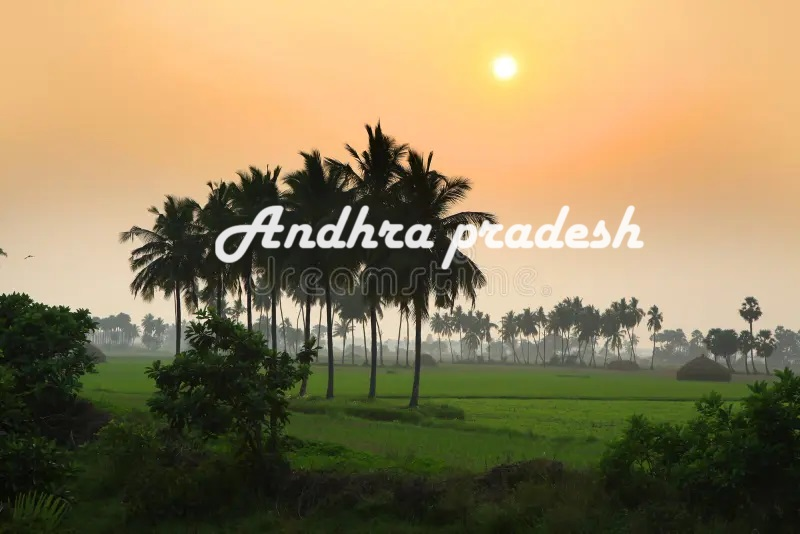

speciality of Andhra Pradesh
Andhra Pradesh is one of the leading rice-growing states in the country and is a major producer of India's tobacco. The state's rivers—particularly the Godavari and the Krishna, but also the Penneru—account for its agricultural importance.
Siva Mallikarjuna Temple

The temple is believed to be the place where Lord Mallikarjuna and Goddess Brahmaramba united in celestial matrimony. Legend has it that Sage Narada played a pivotal role in the divine union of Lord Shiva and Parvati at this sacred spot.
Hill Stations

Araku Valley. Araku Valley is one of the most enigmatic hill stations of Andhra Pradesh. Horsley Hills. Nallamala Hills. Lambasingi. Ananthagiri Hills. Nagari Hills. Papikondalu
Famous food

Panasa Puttu Koora (Andhra Jackfruit Curry) Panasa Puttu Koora, also called Jackfruit curry, is a popular jackfruit dish. Gutti Vankaya Kura (Eggplant Curry) Andhra Pepper Chicken. Hyderabadi Biryani. Shikampuri Kebab. Kodi Pulao (Andhra-style Chicken Pulao)